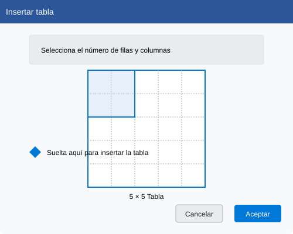

Sesión 5: Trabajo con Tablas
Aprende a crear y formatear tablas profesionales en Publisher
Objetivos de aprendizaje
- Crear y modificar tablas en Publisher
- Dar formato a celdas, filas y columnas
- Utilizar estilos de tabla predefinidos
- Organizar información de manera clara y efectiva
1. Insertar una tabla
Las tablas son herramientas poderosas para organizar información de manera clara y profesional.
Para insertar una tabla:
- Haz clic en la pestaña Insertar
- Selecciona Tabla en el grupo de herramientas
- Usa la cuadrícula para seleccionar el número de filas y columnas
- Haz clic para insertar la tabla en tu documento

2. Herramientas de tabla
Al seleccionar una tabla, aparecerán las pestañas Diseño y Presentación con herramientas especializadas.
Diseño de tabla
Personaliza el estilo de tu tabla:
Estilos de tabla
Bordes
Sombreado
Presentación
Organiza la estructura:
Insertar fila/columna
Eliminar celdas
Combinar celdas
3. Formato de celdas
Personaliza la apariencia de las celdas para mejorar la legibilidad.
| Elemento | Descripción | Ejemplo |
|---|---|---|
| Alineación | Alinea el texto dentro de las celdas | Izquierda, centro, derecha |
| Relleno | Color de fondo de la celda | Celda con relleno |
| Bordes | Líneas que delimitan las celdas | Borde resaltado |
4. Ejercicio práctico
Crea un horario semanal
Sigue estos pasos para crear un horario semanal atractivo:
- Crea una nueva publicación en blanco
- Inserta una tabla con 6 columnas (días) y 8 filas (horas)
- Combina celdas para el título y los encabezados
- Aplica un estilo de tabla profesional
- Agrega colores diferentes para diferentes tipos de actividades
- Ajusta el ancho de las columnas según sea necesario
💡 Consejo profesional
Usa la herramienta Dibujar tabla para crear tablas con celdas de diferentes tamaños y formas personalizadas.
5. Trabajo con datos
Publisher te permite importar datos de Excel o convertir texto en tablas.
Para importar datos de Excel:
- Haz clic en Insertar > Tabla > Hoja de cálculo de Excel
- Copia y pega tus datos o trabaja directamente en la hoja de cálculo
- Los cambios se actualizarán automáticamente en tu publicación
Resumen
En esta sesión has aprendido a:
- Insertar y modificar tablas en Publisher
- Dar formato a celdas, filas y columnas
- Utilizar estilos de tabla predefinidos
- Importar datos desde Excel
Auto-evaluación
Responde las siguientes preguntas para verificar tu comprensión:
- ¿Cómo puedes combinar varias celdas en una sola?
- ¿Dónde encuentras las opciones para cambiar el estilo de los bordes de la tabla?
- ¿Qué ventaja tiene importar datos desde Excel en lugar de crearlos directamente en Publisher?